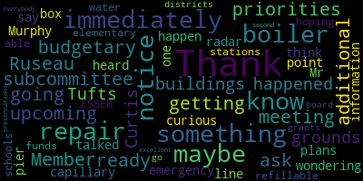
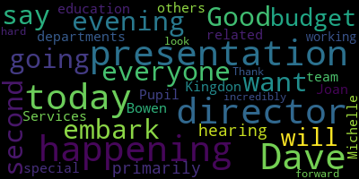
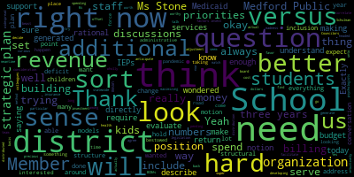

AI-generated transcript of Budget Hearing: Special Education
English | español | português | 中国人 | kreyol ayisyen | tiếng việt | ខ្មែរ | русский | عربي | 한국인
Back to all transcripts
[Lungo-Koehn]: Good evening, everybody. Good evening. Just waiting for member Rousseau. Give him one more minute and then we'll begin.
[Van der Kloot]: I saw his name.
[Lungo-Koehn]: Oh, you did? OK, I didn't see it.
[Van der Kloot]: There he is. He's here. Great. I am here.
[Lungo-Koehn]: Oh, there you go. We'll get started. We're recording. Medford school committee meeting date may 6 2021 committee the whole meeting, please be advised that on Thursday may 6 2021 at 7pm, there'll be a committee the whole meeting held for remote participation. Soon to Governor Baker's March 12 2020 order suspending certain provisions of the open meeting law chapter 30 a section 18 and the governor's March 15 2020 order imposing strict limitations and number of people that may gather in one place. This meeting of the Medford School Committee will be conducted via remote participation to the greatest extent possible. Specific information and general guidelines for remote participation by members of the public and or parties of the right and a requirement to attend this meeting can be found on the city website at www.medfordma.org. For this meeting, members of the public who wish to listen or watch the meeting may do so by accessing the meeting link contained herein. No in-person attendance of members of the public will be permitted, but every effort will be made to ensure the public can adequately access the proceedings in real time via technological means. In the event that we are unable to do so, despite best efforts, we will post in the City of Medford or Medford Community Media websites and audio or video recording transcript to other comprehensive record of proceedings as soon as possible after the meeting. The meeting can be viewed through Medford Community Media on Comcast channel 22 and Verizon channel 43 at 7 p.m. can call in by using 1-929-205-6099. Please enter meeting ID 996-3853-9309 when prompted. Since the meeting will be, oh, sorry. Additionally, questions or comments can be submitted during the meeting by emailing medfordsc at medford.k12.ma.us. Those submitting must include the following information, your first and last name, your medicine street address, your question or comment. The agenda will be as follows, discussion of the development of the operating budget of the Medford Public Schools for fiscal year 2022, as it pertains specifically to the Office of Pupil Services, including the Special Education, Counseling, and Behavioral Health Services and Health Services Departments, as well as Curtis Tufts High School. Signed, Dr. Marice Edouard-Vincent, Superintendent of Schools. Roll call, Member McLaughlin.
[McLaughlin]: here. Here.
[Kreatz]: Here.
[McLaughlin]: Here. Here. Present. Here.
[Lungo-Koehn]: and to the Republic for which it stands, one nation, under God, indivisible, with liberty and justice for all. I know we have a number of our administrators on. I'll turn it over to Mr. Murphy and Dr. Edouard-Vincent.
[Edouard-Vincent]: Good evening, everyone. I just want to say today we're going to embark on our second budget presentation. And we will be hearing primarily from what's happening under our director, departments related to Joan Bowen, the Director of Pupil Services, and what is happening with special education. Dave and his team, Michelle Kingdon and all the others in there have been working incredibly hard And so I look forward again to today's presentation. Thank you, Dave.
[Murphy]: Thank you, Dr. Edward-Vinson. As the superintendent noted, tonight's second public budget meeting and committee of the whole is focused on our Office of Pupil Services led by Joan Bowen. Members of her team will be joining her tonight as we walk through the budgetary priorities for FY 22. The school committee did receive several pieces of documentation related to tonight's presentation and those budgetary priorities. And as we did for the first budget meeting on Monday evening, when we focused on elementary and secondary school communities in the Medford Public Schools, we have a deck that I'll be putting up on the screen momentarily that is the same content as the information that the school committee has received and all of the documents related to tonight's presentation will be uh, published on the Medford Public Schools website. I will say, uh, as I, as I put this up on the screen, um, you'll, you'll see that several of the slides that we'll be sharing as part of this presentation are the same slides, excuse me, uh, are the same slides that we used on Monday evening. And that's, uh, for the benefit of members of the community who are, um, either, uh, this is either they, they didn't see Monday evening or, um, they're watching this on tape. We want to make sure that, um, folks have as much context as possible and make sure that they understand where in the sequence of the budget development this presentation and this information is being conveyed. That being said, given that I know that a large portion of the audience did see this information on Monday, I will move through these first several slides at a slightly more brisk pace. But of course, if there are any questions or if there's anything you would like us to speak in greater detail about, We'll be happy to do that. So we said that tonight's presentation is on the Office of Pupil Services. And if you look in the organizational chart, that essentially means tonight we're talking about the boxes on the far right of our organization. And so you see there that Director Bowen oversees a number of offices and departments that are related to special education and some of the support services that are made available to students across the district. And if I were to, Ms. Bowne will speak momentarily. And so if this is presumptuous of me characterizing or summarizing this before she speaks, I'll apologize. But I would say that if from a lay person's perspective, if I were to describe the Office of Pupil Services in one sentence, it would be that these are the offices that are charged with making sure that the educational opportunities available to Medford Public Schools students are available to all Medford Public Schools students, and that there's equitable access in all of our various school communities. And that while every educator, every staff member has this responsibility, the individuals who lead the offices that you'll be hearing from tonight are charged with making sure that we are meeting students where they are in meeting their needs and their educational needs, whatever they might be. And so some of the values and strategic priorities that we talked about on Monday, that are informing our budgetary proposals for our school communities very much have a nexus between that information and those priorities with the work that Joan's office is charged with doing. And it is for that reason that we are taking this evening to focus solely on the Office of Pupil Services before moving on to some of our other academic and operational areas over the course of the next couple of budget meetings. With that, we'll go, again, we've talked about our budget sequence and the development of our goals and priorities and how that moves across these different lanes to get to the place where the superintendent makes a recommendation to the school committee. The school committee then will take a vote that will serve as a request to the municipal government. You've heard me say this many times, but I don't think it can be repeated enough. And again, this is the simplified version as to where exactly in this budgetary development sequence that we are right now. We, as the administration, are preparing the budget within two separate spheres. We are developing and looking at all of our needs, and we do that by many, many meetings with all the different people representing the different departments, identifying what our priorities are, what our needs are. We'll talk a little bit about how we frame them momentarily. And then that is to go into the information necessary for the superintendent to make an informed recommendation and for the committee to make an authentic request with regard to the district's budgetary needs. At the same time, we understand that the municipal government will ultimately make an appropriation that will take into account all of the various needs and priorities that the city of Medford has to, has to, uh, is, is accountable for. And so, um, for that reason, we are simultaneously preparing a variety of contingencies to make sure that we are able to operate the district with the appropriation that is ultimately made. And so it is not the case that if an appropriation is made that is less than the request that is made by the school committee or the recommendation of the superintendent, that does not mean that we're going to fold the tent and decide we can't have school next year. We're going to operate, we're going to operate effectively, and we're going to serve the interests of students. And while this is a conversation that has to take place, and we have to develop these priorities in an authentic way, I think it's important that we also point out that we will be prepared to operate regardless of the circumstances under which we are operating. Again, on that note, these are the funding sources. If anyone wants to hear more about these, I would encourage you to watch any of the several meetings at which we've discussed this and shown this slide. These are the three buckets in which the priority, we've asked our department leaders to develop our budgetary priorities. First, identifying what our personnel and staffing needs what our material and infrastructure needs and priorities, and what is the training and professional development that we needed, as well as some miscellaneous categories. The committee knows, as you've heard many times, that we've asked everyone to develop the budgetary priorities primarily within the frame of how do we repair and rebuild damage caused by the COVID-19 disruption to students' instruction. We know that students have gone through two very disruptive and nontraditional years of education. And while we're always looking to innovate and build toward the future at the same time, we want to make sure that we are taking into account all of the needs and challenges that have developed as a result of this substantial disruption in students' educational journey. This, as we reported first on April 26th, is our projected budgetary growth for the year. approximately $2.1 million in fixed costs. That is a number that is somewhat fluid. And as we'll talk about tonight, and particularly tonight because of some of the variables that are at issue within our special education arena, that $2.1 million could move. We know that there are approximately $1 million in contractual compensation increases that are owed. Those are your steps and lanes and your movement along the wage scale across all of our different bargaining units. And then in those other two buckets, again, there are variables that could result in some fluidity, both with regard to strategic priorities that we have to weigh over the course of these discussions. And also, we know that we have upwards of nine collective bargaining agreements that are expiring. It is the result of their expirations that's keeping that number of fixed costs down at $2.1 million. But we know that that does not include any potential compensation increases that are yet to be negotiated. And that's part of why we're saying right now, it is a range of 3.4 to $5.8 million. Again, understanding that this is reflective of the needs and priorities as we see them by examining closely within the school district, recognizing that we will be prepared to operate regardless of what the appropriation ultimately is. The other variable that distinguishes the FY22 budget from essentially all other budgets in previous fiscal years are the ESSER funding that is coming available, earmarked specifically for school districts from the federal government. We have two large buckets, relatively large buckets of ESSER funding that is available to the Medford Public Schools, estimated at $2.3 and $5.3 million, respectively. I did, at the committee's request, provide the state guidance that we've received related to restrictions on the ESSER II funding. As you can see, there are restrictions, but they're pretty broad. And as such, it's been incumbent upon us as we've built the FY22 budget to be simultaneously developing our budgetary priorities specific to our ESSER funding. And so that is the bottom column in the budget narratives in each department and school that you've received. And those are the priorities that we see, one, as having a strong nexus between the need and what's precipitating the need related to the pandemic. And it's also taking into account, to the extent that we can, the nature of the funding. And what I mean by that is whenever we develop a budget for a new fiscal year, we want to be mindful of recurring revenue sources and one-time revenue sources. And ESSER is very much a one-time revenue source. That was the case in ESSER I and the funding that was received in FY20 and FY21. And that funding went largely toward infrastructure-type priorities. So that is why we were able to make the $2.7 million investment in instructional technology. It's why we were able to devote so much funding to our HVAC repairs and improvements. That is typically what we want to use one-time funding for. However, as we discussed on Monday, we also have to be cognizant of the urgent educational needs of students. And so it may well be the case that there will be an investment in personnel that is responsive to the ways in which the disruption to instruction has exacerbated the challenges that some of our students are facing. And we know that that means that we are essentially starting a timeline to either identify the efficiencies necessary to make those investments sustainable, or we have to view them as essentially temporary because the ESSER funding is, by its nature, temporary. So there are different paths that we can go, but it is the case that some of the recommendations, as you saw on Monday, will be that some limited amount of one-time funding will be used to try to bridge gaps in our personnel that have a strong nexus with the urgent needs of students coming out of the pandemic. So as we move toward our discussion tonight about pupil services, One of the other variables that really distinguishes the budgets of the departments that we're talking about tonight is that there is an extensive amount of external funding that supports these budgetary priorities. And I think if those of us who work in this field and develop these budgets, if we were starting, if we were writing education laws and education funding laws from scratch, I think we probably would like to see a different sequence in terms of when some of the specifics related to this funding come into view. We're developing an FY22 budget without knowing the level of support that we will have. But by looking back at history, we have a sense as to what we can expect with regard to that extra funding. And so Ms. Bowman and I were talking earlier. The term that we both agreed can apply to budgeting in a special education context is that it's a bit of a roller coaster. You'll see as we go through the slides tonight that there are some potential significant increases from a budgetary perspective that are necessary in order to meet our needs. I mentioned that a lot of, a fairly significant portion of our fixed costs, which has to do with both our emerging needs and with our compliance obligations from a contractual perspective, live within the special education budget. And so when you see those numbers, you can see that this is going to be a pressure point, and this is going to be a challenge from a budgetary perspective in FY22. But when we go to this slide, we see that there's over $2 million that we can expect to receive in that external funding that will help offset the costs that live within the special education budget. So that momentarily can sort of put our mind at ease, and we know that Generally speaking, we have funding that's going to come through Circuit Breaker. It's going to come through the IDEA grant and some of the other smaller sources. However, the sort of the third leg of that roller coaster is that there are other variables that are beyond our control that could increase costs significantly at any point during the school year in order for us to meet our obligations to all students. And so that is something that's a level of flexibility that we have to maintain and a capacity that we have to understand can become exacerbated on very short notice. And so that's why I say these numbers to some degree are fluid. So that's a lot of background and context, and I appreciate your patience as I walk through that. Believe it or not, that was my attempt to go through the slides that you've seen before in an expedited fashion. So I will, as Ms. Bowen begins walking us through some of the specific priorities and initiatives that have been deemed necessary, I will go back and I'll check my clock and I'll see whether or not I was successful or not. So, Ms. Bowen, you're not up on my screen, but I'm sure that you're there. And I know that you have members of your team representing certain offices that are under the auspices of the Office of Pupil Services, who will be helping you this evening go through some of these specific priorities. And then we'll walk the committee through that. And to the degree that there are specific questions or areas that the committee would like us to expand upon, we'll of course be happy to do that. So Ms. Bowen, how is that for an extended introduction?
[Bowen]: That was right on point. Thank you. Good evening, everyone. Good evening, Madam Mayor, members of the school committee and members of the Medford community. Before we get started, I just want to take a moment to express my appreciation to all the special education staff throughout the district. This past year, they have demonstrated professionalism, strength and compassion, while prioritizing the needs of our most vulnerable population. I could not be more proud or more grateful to work with such dedicated staff. As we get started, I want to go through these key priorities that have been identified and just present you a brief overview of them. After I go through this list, there will be opportunities for Stacey Shulman, Toni Wray, and Craig Droschke to provide you with more insight to each of these priorities. So some of the key priorities for serving our most vulnerable and highest needs students is additional staffing capacity to meet both students' needs and compliance obligations. We would like to have the ETL at the Andrews Middle School. We would also like to add an additional connections classroom at the Roberts Elementary School. This is in regards to, we will now have Grades K to five, and we do not have any students that are rising sixth graders, so we will have a full program, and it will require an additional staff person. Contracted services to address low incident student needs. We'd like to shift some roles and responsibilities to allocate more direct support to our students. We'd like sufficient school nursing staff at the McGlynn Elementary School, Middle School, and the Curtis Tufts. And I believe that Ms. Ray will speak more directly about this. We'd like to provide more training to our paraprofessionals. We're looking into them becoming registered behavioral therapists, which will help with the social emotional concerns and challenges that we see when students come back to school next school year. We would also like to increase our behavioral specialist positions and Ms. Stacey Shulman will be addressing that later on as well. One of our biggest needs that we see in the district and most concerning is the need for more teachers to be trained in Orton-Gillingham, and we would like that for all K-1 teachers. This is also part of the new dyslexia guidelines that have come out, and it would just be able to strengthen the teachers' toolkits in regards to reading. We'd also like to add a COVID testing coordinator, a Medicaid billing team. This is extremely important as there's new regulations that need to be followed. And it takes a whole team of people to be able to do this Medicaid building. And as we are billing, I'm sorry. And as we go through it, we're identifying team members, what it would look like and what it would cost the district to be able to do that. The next is building based professional development at the Curtis tough school, and Mr. Drowski will speak more to that. Recovery high school enrollment support. Every year we have one or two students who are enrolled at recovery high school, either in Boston, or I believe it's in Beverly, that the district is required to pay their tuition. We would like to have this built into the budget for the following school years to support that. And then also a 0.6 full-time employee school Councilor to support focused on students who are English learners. So I believe Ms. Schulman will also talk about that. So I'm going to ask Ms. Schulman if you'd like to talk about your priorities for your department.
[Schulman]: Good evening. I'll begin with discussing the behavioral specialist positions. We all know that the COVID-19 pandemic has caused a lot of social emotional need, not only for our students, but for our society at large. I am anticipating a significant amount of behavioral support needed specifically at the elementary level. Currently in the district, we have four full-time BCBAs that are supporting students throughout the district and one behavioral specialist that supports specifically the Columbus Elementary TLP program. I would like to increase this to four behavioral specialists who would be part of the paraprofessionals unit to support students with oversight from BCBAs at each of the elementary schools. Additionally, as Ms. Bowen mentioned, for the past several years, we have had at least one high school student enroll in a recovery high school program. Previously, we have not had a line item specified for that, so we'd have to pull from other funding. Additionally, I would like to add a .6, so three days a week, of a school Councilor at the middle school or high school level to support students who are English learners. We have seen more than ever our English learners struggling in the school system, more than ever with the closure and pandemic, and it would be of great need to have someone dedicated specifically to those students and their unique needs. Thank you.
[Bowen]: Mr. A, would you like to go next?
[Wray]: Mayor. Yes. Yes. Good evening. Oh, excuse me, Mr. Russo.
[Murphy]: Member Ruseau.
[Ruseau]: Are we going to go all the way through before asking questions or are we going to do?
[Murphy]: That would be my recommendation. We have two additional speakers, Ms. Ray representing Health Services and Mr. Drovsky representing the Curtis Tufts High School. And at that point, we'll go back to the umbrella group and I'm happy to take your questions, but that would be my recommendation.
[Wray]: Thank you.
[Murphy]: Sounds good. Thank you. Ms. Ray.
[Wray]: Good evening, Mayor, members of our school administration, members of school committee, and our Medford Public Schools community. The priorities that were identified for health services for next year include a halftime school nurse at the Curtis Tufts High School. In past years, we've had a patchwork of support at the Curtis Tufts. The students there have need for a consistent nurse to be there, attending to their needs and helping them make connections with the healthcare community for as they transition into post-Medford Public Schools life. I have been providing that support this year. I think given my upcoming retirement, and it would be an unreasonable request for my successor to manage both aspects of that role. In addition, this year, staffing was shifted so that up 0.4 FTE was moved from the McGlynn middle school and elementary school to the Columbus elementary school. This supported the COVID testing that was taking place. We know that the student behavioral needs required having that second nurse at the Columbus Elementary School, and I was unable to shift that person back. The McGlynn Middle School, with the student population, and will, it requires, three FTEs at that school to manage the student needs, including medication, different procedures, and nursing care for our access students. The, my last priority recommendation is to establish a dedicated coven coven testing team and data support. This year, the school nurses as their, their traditional role changed from a providing hands on care in the offices to much more of a public health role, we were able to accommodate the testing with support from the Northeastern University School of Nursing. Next year, as we transition back to a very traditional school nursing role, we will not have the ability or the capacity to maintain testing at a level that it may need to be provided. I think we could accomplish this with a team of four people who would rotate amongst all schools for testing. Thank you.
[Bowen]: And last but not least, Mr. Droschke, if you'd like to talk about your budget priorities. Thank you very much. You're breaking up a little bit.
[Murphy]: We're going to add a new microphone to the Curtis Tufts High School as a last minute budgetary priority, I think. Hold on one second.
[Lungo-Koehn]: We just heard you better.
[Murphy]: That was better, Craig, if you want to.
[Drauske]: Sorry. That works. That's good. So for the budgetary priorities at the Curtis Tufts, the expansion of the special special slash electives teacher at the Curtis Tufts to a halftime position would facilitate some learning opportunities for the students that, in my opinion, are some of the most valued that the students get and are the best opportunity to meet some of their social emotional needs within the school setting. Flexibility in scheduling, is one way to support the needs of the students and expanding elective offerings will provide opportunities for credit recovery as well. The current schedule focuses on academic opportunities with art offered one time a day and health offered one time a day. And the expansion of a .5 FTE teacher would allow us to offer more electives that would promote positive student driven learning in various times of the day. And as Ms. Ray highlighted, it has been lovely to have Ms. Ray there this year. But as she also said, having consistent adults in the building, trusted consistent adults in the building is a key part of our programming. Thank you.
[Murphy]: I think Ms. Ray said that it would be unreasonable for her successor to be expected to serve both as the director of health services and as the part-time school nurse at the Curtis Tufts High School. And I think that it probably goes without saying, but it wasn't particularly reasonable for us to ask Ms. Ray to do that over the course of this year. And as has been the case with all of the responsibilities of leaving that department that has served such an invaluable role throughout the course of this school year, especially, certainly every school year, but this school year especially, she's done it with a great deal of grace. And I know served as an important member of the Curtis Tufts community, but it is something that, and I would also just incidentally note that that has been a budgeted position and it's something that it just, it wasn't filled. It is conceivable that we'd have to look at whether or not the .5 nature of the position is something that we may have to increase that. Again, the .5 is already budgeted, but it may be the case that we'd have to increase that to a 1.0. Presumably, the responsibilities would still be shared. I don't believe, at least at the moment, it can change depending on the population, depending on the number of students enrolled. We wouldn't necessarily need the 1.0 at the Curtis Tufts, but it may be the case that we have to hire a 1.0 and then divide up the responsibilities. And there are a few other situations like this. I mean, we mentioned the fact that while this is an extensive list of priorities and you've seen the narratives of department by department and school by school, some of these are fixed costs. Some of these, Ms. Schulman mentioned the, I believe it's budgeted at somewhere between $8,000 and $16,000 with regard to the cost for the recovery high school program. That is a, as it's been explained to me, a cost that the district incurs year after year. And as is the case, it's not uncommon, but in school districts where you have these relatively low dollar amount costs that are not guaranteed to be incurred on a year-in and year-out basis, it never essentially finds a landing place or a home within the budget. And each year, either the person in my role or in Ms. Bowen's role or Ms. Schulman's role, whatever the case may be, is going around and trying to identify a source of funding at the last minute to try to make sure that it's something that is covered. And in one way or another, on a $63 million budget, there is $8,000 that you can pull But it's an unnecessary step and not really reflective of our accurate costs to not actually have it living in a particular place. So the last thing I'll say before we open it up to your questions is that, as you can see, given the nature of the work that these offices and departments are responsible for, in many cases, there is a very strong nexus between our COVID-related needs and these priorities. That is why you're hearing a lot about the development of the ESSER budget. And at the same time, because we don't know yet what our operating budget is ultimately going to be. And we have advanced our conversations with the city in recent days. And so we're getting a clearer picture of that. But there's still a number of variables that no one knows the answer to yet, particularly related to restrictions and as they might apply to ESSER III and to the ARPA funding. And so without that information, it's important for us to develop these priorities, communicate to you as the school committee and to the community what we plan to address. And as was the case on Monday night, whether some of these priorities land in the ESSER budget or in the operating budget, we'll have to take into account the nature of the expense and the nature of the funding, be it one time or recurring, the urgency of the expense and the availability of the funding, which will be very important And we understand that there will be determinations that have to be made over the coming years with regard to sustainability. And at the same time, there'll need to be additional determinations with regard to need. And that'll be true for the priorities we're articulating here, which may be quite urgent in the 21-22 school year. But two years removed from the pandemic, they may be less urgent. At the same time, we have an obligation to be continuously looking at our expenses and seeing what programs and what roles are relevant and what are producing or contributing to outcomes for students, and what are ones that roles or programs that may not have as urgent a need as they once did. And so that's a conversation that's ongoing. That's part of the budget process. It's part of the governance process. And we'll continue to do that through the development of the FY22 budget and beyond. I'm going to stop the screen share for now, but we can certainly go back to it if people have specific questions or would like to make reference to specific priorities and the team and I are happy to take your questions at this time.
[McLaughlin]: Member Mustone?
[Mustone]: Thank you, Mayor. Just two questions. Thank you guys all for all the information. Ms. Schulman, I think it's a great idea about the school Councilor for the ELL students. I didn't know if 0.6 is enough for both middle school and high school. If it was possible, that position could be increased. Cause I do think it's probably a good idea to have a both a middle school and high school and to have someone who's just 0.6 try to go between three buildings would be a challenge. And then the next, and I'm not sure Mr. Murray, if it's the gym teacher, would that be under a different department? We had talked about an adaptive gym teacher for the last, I wanna say at least two years. Um, so I, if that's a different department, I can hold it to another meeting, but I just want to get some clarity.
[Murphy]: I'll be happy to speak to the adaptive PE teacher momentarily, but I'll defer first to Ms. Shulman with regard to the adjustment Councilor focused on students.
[Mustone]: And I apologize. I did it again. I said, Mr. Murray, because Colin's teacher is David Murray, who I see.
[Murphy]: I just can change my name. I could put a slash next to it. I really will respond to anything. Thank you.
[Mustone]: Thank you.
[Schulman]: In regards to the EL Councilor, I agree. But my focus will be looking at supporting high school level students. We have a significant number of Councilors, specifically guidance Councilors at the middle school. Their roles and responsibilities are more flexible than the high school Councilors who have significant responsibilities with post-secondary transition. Therefore, I'd be looking to house the Councilor primarily there, though it would seem to be best fitting to have them be available for the middle school should something arise.
[Murphy]: And if I could just add one quick comment that I think it's okay for me to just, we've talked a lot about how we've had so many of these meetings leading up to these presentations, and I just, for transparency's sake, Some of the conversations that have occurred as Ms. Shulman and I have discussed the budgetary priorities coming out of the counseling area is that we know that there is clearly a strong nexus between the work that her department is doing in our work to repair and rebuild from the disruption caused by the pandemic. And so it might well be the case that there are resources available to the counseling department in order to try to fund some of these priorities. And hypothetically, one of them could be of 1.0 Councilor focused on EL students. Right now, we think 6.6 would be sufficient with regard to where we are. But the Counseling and Behavioral Health Department, like all departments, will have a responsibility during the life of the ESSER funding to talk through what are their best practices, what are their current structure, what are the current roles and responsibilities. And in addition to giving us the opportunity to respond to the most pressing needs of students coming out of the pandemic. One of the things that the ESSER funding gives us the opportunity to do is to look at all of our practices and to look at how we're structured and to look at what we're doing well and what we're not. And what it means is part of identifying what's going to be sustainable is identifying those practices and committing to them during the life of this ESSER funding. And that, frankly, it's a forcing mechanism for us to determine what are potential efficiencies, what are potential consolidations, what are necessary investments. And so I think that is, you know, clearly we need the ESSER funding because we need to make sure that students are not having their educational careers defined by these horrific years in terms of, you know, the experience you're having as a student trying to learn to read or trying to move through some of these transitional periods. But it's also a real opportunity for the organization to identify how should we be organizing our funding and our structure going forward. With regard to the PE teacher that Ms. Mustone references, that priority, which I'm certainly familiar with, and I know that it's something that's been discussed in this forum several times in recent years, and it will be discussed next week in the academic presentations along with the PE and health department budgetary priorities. I will say, though, just as a way of sort of foreshadowing that conversation, We will be looking to engage in a discussion about what is the most prudent investment. We certainly, a 1.0 PE teacher is something that I know the committee has considered and it's something that, if that's the committee's direction, it's something that we'll certainly commit to retaining and to try to add that to the suite of services that we have in our PE and health department. But I do think that given that this has been a budgetary priority, it is a, a conversation that we've had internally about what would it look like to have the most expansive availability of PE classes and adaptive PE classes and adaptive PE certifications. So perhaps that's hiring a 1.0 or perhaps it is going to the teachers union and bargaining over the impact of requiring an adaptive PE license or at least one per building. And they're not either or. But the committee should be prepared for that conversation because I think that as we look at the limited capacity we do have, I think we have to make sure that we're attempting to move forward in the most thoughtful way possible. So that is a conversation for next week, but I think just as evidence of the fact that we're actively discussing it, you should know that we're looking at both of those paths as a way to make sure that ultimately we're bringing that staffing capacity to bear. in a way that will benefit students.
[Lungo-Koehn]: Thank you.
[Van der Kloot]: Thank you. Member Van de Kloop? Yes, thank you. I just wanted to ask a quick question about the Curtis Tufts. Could you tell me what the current population of the school is right now? And also, were there some students, did all students start coming in? Or do we have any fully remote students at the Curtis Tufts?
[Drauske]: Currently there are 22 students on the rolls. There are six that are presently all remote. I'm sorry, there are seven that are all remote.
[Van der Kloot]: So do the Curtis Tufts teachers, are they interacting with those students specifically?
[Drauske]: Yes. I mean, our teachers have been in since the very beginning. And they are running Zoom classes alongside of their in-person classes as well.
[Van der Kloot]: Next question. You mentioned the program, Boston Recovery Program. In what ways would that differ from, say, a student going to the Curtis Tufts?
[Bowen]: I'm Paul and I can answer that so the recovery high school is a general education high school it's a public high school. So it does not provide students with special education services. It works on addiction and recovery. So it's separated that way it would be very different than the Curtis class.
[Van der Kloot]: Yeah, it falls within, I mean, I think it's great that we're building something in because certainly one of the biggest problems in this realm is that we don't usually get to build stuff into our budget, it seems. And then all of a sudden somebody moves into the district. And so I think that that's a very positive move, but I just wanted to make the distinction. Thank you.
[Schulman]: And I have one clarifying note to that about the recovery high school. It's a very different process for enrollment than for special education. So we do not receive notification of a student's intent to enroll in recovery high school. We receive notification when they have enrolled and they've been accepted and Medford public schools is liable for that expense to cover the cost for that student.
[Lungo-Koehn]: Okay, thank you. To follow up on that, do we have any students in that program? And if so, how many and how much does it cost?
[Bowen]: Right now, I believe we have one student and I think the tuition is approximately $8,000. That's correct.
[Kreatz]: Thank you. Member Ruseau.
[Ruseau]: Thank you. Member Mustone asked part of what I was trying to the similar question around the 0.6. Can I, I need help to understand, do we advertise for a 0.6 FTE and are there really people looking for 0.6 FTE work, especially in this setting, in this environment and the skillset we need? Because I don't want to hear that we have students that need these people, we budgeted for them, but they don't exist or they only exist at 1.0 FTEs. And if that's the case, then I think we need to really think about this? Where did the point six come from?
[Murphy]: Yeah, I mean, it's a it's a fair point. And I think I mentioned that it well might be the case that strategically, we have to look to hire a 1.0. But just because there is a there are capacity issues with regard to our budget, it may be the case that our immediate needs are right now to devote a point six to the EL program, and then that would free up the potentially 0.4 to other schools that also need to supplement their services. So the other factor in this, as I mentioned, or as I maybe alluded to, it may be the case that there may be a confluence of the applicant pool leans toward desiring a 1.0 position. And theoretically, we could be splitting the cost between ESSER funding and operating budget. in a way that would allow for 1.0 worth of services with the understanding that part of that funding would need to be identified through a different funding source over time because of the one-time nature of the temporary nature of the ESSER funding. So those are the types of strategic decisions that we will need to be sifting through as we get a greater sense both of the restrictions on ESSER funding and ARPA funding and what our overall capacity limitations might be. but it certainly might be the case.
[Ruseau]: Thank you. I just want to make sure we avoid, you know, at one point we had, we didn't have a full-time nurse at each school a couple of years ago, and that was resolved, but, you know, kids don't need nurses necessarily on a schedule, you know, when there's accidents. And similarly, we didn't have enough adjustment Councilors all the time and the elementary schools. And when a kid has a meltdown needs an adjustment Councilor, they do it when they do it, not when we have scheduled somebody to be in the building. So I just wanna hear you say there will be, for our EL population, the entire time the kids are at school, every single day of the week, there will be an EL support person in this role, five days a week. I don't care where the funding comes from, but I don't wanna hear that two days of the week, hopefully they won't need one. That's not responsible.
[Murphy]: I think, sure. I mean, first of all, we always have to prepare. All budgeting is contingency-based to some degree. And so we want to make sure that these resources are available as needed by students. That's the whole point of building the budget. But what I would say is just a couple of things. One, when we talk about devoting a 0.6 position to an adjustment Councilor focused on serving the needs of our English language learner students, That is not to say that adjustment Councilor staffing is only available to EL students three days a week. It means that that position is budgeted for and is in a role that is devoted to that time. But there, Ms. Schulman's department, as you can see in the staffing breakdown and the documents provided to you, this is sort of the second point I want to make. Every one of us is responsible for all students. And of all presentations at that point really needs to be reiterated, I think it's probably in this one, because we talked a lot on Monday evening about the departmentalization of this budget and how that's reflective of the departmentalization and siloing of the organization. That's not a good practice anywhere. And it causes problems when we think of the organization too rigidly in any sense, whether it be operations or academics. But when it comes to the offices that Ms. Bowen oversees, it is completely unacceptable for anyone to think that they are only responsible for a particular constituency of students. And so as we try to develop better practices from a budgeting perspective, and ultimately, hopefully, those practices can be, can bleed into how we operate as an organization, and we try to become more integrated and break down those silos. Hopefully, one of the things you'll see is that we don't need to just have particular staff assigned to particular programs. We'll always need people with expertise, and that's why there'll always be a Department of Pupil Services or Special Education, because it is a highly complex area. And so it's not in any way to belittle the level of expertise that's necessary. But I think your question speaks to the point of the need essentially see a more integrated organization so that that's never an issue in terms of what capacity is available to which student based on the program that they're in. That's part of what I think we need to break down.
[Ruseau]: Thank you.
[Lungo-Koehn]: Member McLaughlin.
[McLaughlin]: Thank you, Mayor. I actually have a lot of questions, so you may, I want to defer to you to let me know when to stop and let another member go, and then I'll get back in the queue again, if that's okay.
[Lungo-Koehn]: Maybe two to three questions, then we'll give the rest.
[McLaughlin]: Okay, thank you. Let me just see here. Thank you for the presentation. This is always, I feel like a very complex aspect of the of the budget because it does the Director of Pupil Services obviously carry so many different departments. I wanted to thank you also for providing the program descriptions that you provided to us, and I hope that obviously these will be shared with the community and the public and also the breakdown of the programs within each of the schools which I think is really important for us to discuss and also for the community to see and. I think it's a little bit unfortunate that wasn't part of the introduction, but I know that in the interest of time, there's a lot to cover here. So I can appreciate that that hadn't happened and why. But I am going to be asking some programmatic elements because they do relate to budget as well. And so if you'll bear with me on some of those things, I appreciate it. I just want to mention that in the programmatic piece, the language-based definition of the program, the Medford Special Education Programs, in the language-based, it's mentioned that there's grade-level access for the students. Language-based program uses grade-level content for ELA reading, math, social studies, and science, so on. And I just wanted to clarify, the access program says that they use Massachusetts curriculum frameworks. And my question is, aren't all of these programs and segregated classrooms and substantially separate classrooms, aren't they all grade level?
[Bowen]: They could be significantly modified for the students within that program.
[McLaughlin]: Sure.
[Bowen]: They're following the curriculum frameworks. Yeah. but it may be significantly modified for say access as opposed to our language based programs.
[McLaughlin]: Yes. But in other words, I understand that. Thank you. But in other words, a fifth grade student learning about the American revolution means the access classroom for fifth grade students are learning about the American revolution. It's just an access point that is different than say, you know, the general education classroom. But in other words, the content is grade level content. Yes, yes, that's what I wanted to clarify thank you I wanted to make sure that that's the case because I'm not sure that that's all always understood in resource room opportunities at other schools and all programming levels, what does that look like I was curious, there was some narrative in here that there were resource room opportunities at all schools. and all programming levels. And I just, there was no clarification on the programming piece either on what the, or there was for the resource rooms, but there, oh no, was there for the resource rooms? Yes, resource rooms. But here it's listed only at the high school. So for the special education program sheet, where you have all of the different program divisions, there's a resource room learning center division and it says Medford High School and voc tech. But then if you go back to the presentation itself where we're breaking down the different settings schools that you did, which was very helpful. Thank you. I found this to be extremely helpful document. It says resource rooms on all of the different schools with an asterisk, but it says provided at all programming levels. And I'm wondering, what does that look like? Can you explain to us what the resource rooms are and how they look at the different schools, if you don't mind?
[Bowen]: Sure, so the resource rooms are across the district. So it's a small group setting for special education students and it's in a specific area. So a student may need to go to a resource room if they have a math disability, but they do not require a substantially separate program or they do not require you know, to be in special education services all day. So we have students who go to a resource room for math, and they're in the general education setting for all their other major subjects. Resource room is to provide scaffolding. They have a lot of support classes, which we call reading and writing, and that helps students with reading, writing, If they have a big project that they need to break down, helping them with test taking skills, organizational skills. So it's usually about eight students in a small group setting with a special education teacher that focuses specifically on what subject they're teaching in that resource room. And it varies. It's not one size fits all. We have some students who are maybe one subject, some go to four different resource rooms. So it just varies for each student individual needs.
[McLaughlin]: Thank you. And that's across all levels of disability? Correct. Okay. Thank you. I appreciate that. And then do I get one more there? for now? Yes, please. One more. Okay. And so, when I was doing the math on this document, again, this is the special education programming by schools, broken down by students on IEPs, programs, special ed teachers, paraprofessionals, and the co-teaching slash inclusion model. When I was adding up the paraprofessionals, it said that we, I got the number of 80 paraprofessionals. Is that right? We have 80 paraprofessionals currently?
[Murphy]: PB, Harmon Zuckerman. PB, Harmon Zuckerman. PB, Harmon Zuckerman. PB, Harmon Zuckerman. PB, Harmon Zuckerman. PB, Harmon Zuckerman. PB, Harmon Zuckerman. PB, Harmon Zuckerman. PB, Harmon Zuckerman. PB, Harmon Zuckerman.
[Graham]: Thank you. I had a health services question. Under additional budget priorities worthy of consideration, there's this notion of developing a Medicaid billing team. And I was just curious what revenue is generated to Medford Public Schools today for Medicaid billing and what we would anticipate being generated to Medford Public Schools were we to invest in additional staff to facilitate that?
[Wray]: I don't have the exact number of how much we receive from Medicaid billing. Revenues do go to the city. I know I did a pilot program of billing for nursing services for one student for part of last year, and we were able to recoup about 12 or $15,000 based on the nursing services that were provided to that student over a course of five months. Last year, the federal government expanded the Medicaid reimbursement program so that we no longer have the restriction of only billing for students who are on IEPs. Now we can bill for services provided to any student who has mass health coverage. And this includes many of our screenings, such as vision and hearing screening, substance use assessment screening, medications, treatments, procedures that are provided to students as part of their healthcare. There's also an expansion with speech language services and related occupational therapy services. So there is potential to recoup a fairly substantial amount of money. There is a process and it's very heavily regulated by the government, as you'd expect. So it requires people who are trained in that billing process so that we can accurately recoup what we deserve.
[Graham]: Yeah, and I am wholly on board with maximizing our revenue, but I would only be in favor of this if the revenue actually comes to Medford Public Schools. So if we have to decide how to spend our precious budget dollars, we can't be spending them to generate revenue that does not return back to the district directly. There's also statewide legislation pending that would require that, but in the meantime, I think it's an investment worth making as long as the return is there to offset the cost.
[Wray]: Agreed with you. Being that the services are provided by the school, it seems appropriate that they come back to the school. And I know there's a lot of lobbying towards that and has been for many years. Just the small amount of monitoring I had to do, I mean, I could not have done that on a wide scale basis for all the students who would be eligible. So it really becomes fulfilling that role.
[Graham]: Yeah, insurance billing is a beast unto itself. Exactly, exactly. Yeah, thank you. And then I did have a question for Ms. Schulman. I wondered if you could talk about the factors that go into what a particular building needs, because when I look at the distribution of adjustment Councilors versus school psychologists versus BCBAs, I can't correlate how staff are distributed among buildings. It doesn't match IEPs. It doesn't seem like there is an actual basis for those numbers. So can you describe where we're headed?
[Schulman]: In that regard, absolutely. It is, it is confusing and it's in part because many of the roles have overlapping responsibilities. So in some of the elementary school profiles it's noted that there is a point five school psychologist. other elementary schools, there is a full-time school psychologist. This is in part because the 0.5 school psychologist is a one FTE employee who only does psychological evaluations for IEPs. They do not provide counseling services, while the other school psychologists 1.0 in the buildings do provide counseling services. So then you would see a lower number of adjustment Councilors in that building. There's also additional staff in buildings with specialized programs, specifically with therapeutic learning programs, have more staffing than other buildings. But we are certainly looking to streamline services more next year. In my more detailed budget, you will see more indication of that, if that answers your question.
[Graham]: So I think you're saying there's a method to the madness and it's okay the way it is right now. Is that what you're saying? Yes. And so can we try to find a way to describe why this is? rational, like it just doesn't look super rational. And it's really hard to, I think intuitively, I'm sure my colleagues agree with me that there's a widespread acknowledgement that we need additional support at the elementary school level. I don't think there's an argument about The need in a like macro sense, but like to understand like where does where does the need plug in and is it enough, I feel like I don't know how to evaluate that at the moment because. There doesn't like there's there's no rationale that makes these numbers sort of. make sense. So it's hard to say like if everything's okay right now are we just like incrementally adding to everybody or are we trying to fix a structural deficit somewhere like what what is the goal of the additional staff and is it enough?
[Murphy]: I would say if I could just very quickly I think I think that's important that we do spell that out and I think it's it's an important part of people understanding where this investment is going especially as it pertains to the ESSER funding that's coming in because $7.6 million is a really big number until you see that it's really attached to over the course of close to three fiscal years. And then all of a sudden, when you factor in the disproportionate need that is being realized because of this disruption that students have lived through, all of a sudden, those dollars appear to be much more scarce. And that's part of why, as we discussed a little while ago, while there is a rationale now to how these services are being deployed, There is also a responsibility on the part of the district to identify while this funding is available, what is the best plan forward with regard to these investments when we don't have that sort of funding available, frankly. And so when Ms. Schulman talks about potentially streamlining or identifying the responsibilities overlap, there's also going to be a responsibility on this department and every other department to identify what are the best practices across various grade levels and what is the formula essentially that will best fit the needs of students across each schools. And so that's a long way of saying that the rationale that we would describe, that we would provide now based on the system that we have in place, very well might differ from the rationale that we bring forward to you next year when we are one year closer to ESSER funding not being available. And I think that's something that we have a responsibility to do and there's an urgency as a result of having this additional funding available in the short term.
[Graham]: Okay, thank you. And my last question is on the sheet that was provided to us about special education program across the buildings. I noticed that there are zero students listed in gen ed inclusion. And I wondered if that is typical for a district of our size.
[Bowen]: The label general ed inclusion is just what the building offers. So it's not, I didn't put numbers of students underneath co-teaching or anything like that. So it's just that they offer either co-teaching or inclusion opportunities. I can get you the numbers and break it down for you if you need that information. I think it would be helpful.
[Graham]: at some point to clarify that. I don't have a sense for how many students are in co-teaching models. I don't have a sense for how many students are in inclusion models, nor what the holdbacks are if we're sort of out of alignment with what you would expect. I have no sense of how to evaluate that if we don't know what those numbers are. So I think that would be very useful for the committee to understand because, again, if there's a structural, like a staffing deficit that is causing us to not be able to optimize those experiences for students who could benefit from them, I would want to be able to have that conversation. Thank you.
[Lungo-Koehn]: Member Kreatz, are you good for now?
[Kreatz]: I was just going to ask, and I know it's something that is additional budgetary priorities. And I was getting ready for my upcoming subcommittee meeting with buildings and grounds. So I just happened to notice under the Curtis Tufts, they have a capillary pier for the boiler. And it does say immediately, most immediately boiler repair. So I was just wondering if that is something that is on the radar, you know, other plans for an emergency repair. I think we heard about it at one point. And so I was just curious if maybe if Mr. Murphy has any information about that.
[Murphy]: Yeah, it is a repair that needs to take place in the next six months. We had a, I think you remember Ms. Gretz that we discussed there was the potential for a catastrophic failure earlier this year. We were able to essentially create a bridge solution that Mr. McLaughlin can articulate more eloquently than I can with regard to exactly how we fixed it. But we fixed it and we were able to keep the building open, but it's not a long-term solution. It's something that we will have to address over the course of the summer. And frankly, the capital repairs that are necessary at the Curtis Tufts, Some of which ranging from sort of short term maintenance by fresh coats of paint and things like that, into some of the more significant things. There is a need to look at all of our capital priorities and making sure that that building is reflective of our values and the investment we have in the students who are going to school there. And so I give a great credit to Mr. Dravsky and his staff for working day in and day out in a very old building with some significant challenges. There will be a need for some work there over the course of the summer to make sure that it's where we need it to be. The boiler is certainly the first priority.
[Kreatz]: Thank you. And I also happen to notice on the same line in the same box, and we talked about it with the elementary schools, was the refillable water stations. So I'm hoping that with the ESSER funds that we'll be able to maybe get those to the districts if the grants don't go through with the on-board.
[Murphy]: Yeah, between grant funding, capital funding, and ESSER funding, these are all things that they won't, I suspect, land, and I don't think they should land on the operating budget, but from one of those other funding sources, these are things that we have to address over the course of the next year without question.
[Kreatz]: Thank you, and thank you to everybody for all your presentations. They're excellent. Thank you. Thank you.
[Lungo-Koehn]: We have Member Van der Kloot, Member Mustone, and then, I'm sure, Member McLaughlin.
[Van der Kloot]: Thank you. First I wanted to mention that it happens to be National Nurses Day today. So Tony I wanted to bring that and say particularly to our all of our nursing staff who's done such a tremendous job this year but to you in particular as well. And, you know, we We really haven't given you all the senior praises yet, but we will. It's very sad to know that you are retiring, but boy, what a way to go. Tony, you certainly pulled out all the stops this year.
[Wray]: Thank you. And my team really appreciates everybody's thoughts of gratitude. Thank you.
[Van der Kloot]: Sure. I just want to ask you a little bit more about the four additional people you've recommend it in terms of tracking the COVID and for next year. What exactly, could you expand on the role, I mean that's a, you know, four more nurses, Could you speak to it a little bit more?
[Wray]: I could. Actually, a COVID testing team does not have to be nursing staff. It could be coordinated by somebody with a bachelor's degree in public health. And then the testers slash swabbers are trained personnel. So maybe health assistants would be able to fill that role. We used nursing students very successfully. They were supervised by the school nurses, and it not only provided them with an extra learning experience in the public health arena, but it served our needs as well. in a very safe manner. I envisioned a small team that could go from school to school to do the testing. I think come the fall, we may not require twice a week testing. We may be able to do with once a week testing and then follow the metrics to see how long we need, you know, we would need to continue that. Certainly the winter time, it may spike again, but I think a team that rotates between schools would be able to handle that project.
[Van der Kloot]: Right, so the difficult part with that is that, you know, please God, when this passes, you know, at which point we've now hired in, you know, a team of four people. And then we're just sort of saying, you know, I'm trying to figure out how that works.
[Wray]: It's probably similar to the contact tracing teams that the state has hired. They are grant driven short term programs and positions dependent on public health need. And many, many hundreds or thousands of people were hired into the contact tracing system working for the state.
[Van der Kloot]: Okay. Thank you, Tony.
[Murphy]: If I could just add very briefly that that is a microcosm of a number of the questions that we're facing, because the reality is that not every position that we are advocating for will live in perpetuity. Some of them are positions that are to address short-term urgent needs, ranging from operational to instructional. Some of them are positions that we think would be helpful and useful, but the reality is that there may not be funding to sustain them indefinitely. And there are some that we think are probably really wise investments. And hiring now, frankly, will create, as I said earlier, a bit of a forcing mechanism for the district to determine how we make them sustainable going forward. And I think all three of those scenarios are things that are represented by the developing this budget.
[McLaughlin]: Thank you.
[Lungo-Koehn]: Member Mustone, then Member McLaughlin.
[Mustone]: Thank you, Mayor. Mr. Murphy, I don't know if it's possible for you to screen share page seven, which lists the superintendent's draft recommendations. That'd be great if you can do it. So, superintendent, I love your recommendations because I think those are things that we have learned through community and teachers and parents that are necessary. For the page seven,
[Murphy]: Is this the pupil services budget?
[Mustone]: Is this the... That is the one, thank you. So page seven, and now I'm gonna, sorry, Mr. Murphy, can you go to page eight? Just cause I was just highlighting what is in both the director's request and both the superintendent's direct. That's not the one.
[Murphy]: Which is it, pupil services, health services, Curtis Tufts or counseling?
[Mustone]: It's the one, it was in my package, page seven and then page eight. So it's, I think it's the whole department. Um, no. So at the top, so they pretty, I guess, I don't know if you can probably see mine, but it lines up except under the director's personnel priorities.
[Murphy]: Um, all right. But keep talking and I'll- You got it, okay.
[Mustone]: So under the director's personnel priorities, it lists two, four, six, eight, 10, 11, 12, 13 bullets. All of the director's priorities are in the superintendent's recommendations except for the director's has three bullets. One is behavior specialist at four specialists, One is a meet ETL position and one is an administrative assistant for the Curtis Tufts High School. So they all sound like they are worthy priorities to be getting on the superintendent's recommendations. I wish I was tech savvy enough to show you just the the two papers that I have. So I love the superintendent's recommendations. I'd love for us to make a motion to get them into the budget, but I do think it's important to add the three that didn't make it to the superintendent's recommendations that were on the director's personnel priorities, which is the behavior specialist, the meet ETL position, and the administrative assistant for the Curtis Tufts High School. So I don't know if you know what I'm talking about. It was page seven and eight. It's a Joan Bowen's report.
[Murphy]: Yeah, I do. And I will, I will bring that up. And as I do, I just, I want to, um, so just as a, as a point of process for folks that, um, didn't hear this piece of it on Monday, the, the information provided to the school committee provides, um, three distinct tables. The first table discusses the allocation of staff in the various areas, either in departments, roles, or buildings. The second table. is the superintendent's draft recommendations. Those are the pieces that through the budget vetting process, our internal process, they have risen to the point of being the recommendation of the superintendent. The third table are from the department heads themselves. And that is in response to the school committee wanting to essentially see the raw data of the budgetary process. And so The three budgetary, now there are different reasons that something might make it onto a director or a principal's priority list, but not into the superintendent's recommendation. Sometimes it's because the director has advocated for it, but we know that the need is being addressed elsewhere in the budget. And therefore we wouldn't recommend it being part of this particular department's budget. So with regard to the behaviorist positions, and again, we've got, advocating, requested adjustment Councilors, behavior specialists, and a variety of other different people doing these roles. And so I can go back and look, but I'm pretty confident that that role, the reason it's not in the superintendent's recommendation is because we know it's living elsewhere in the budget. And it is really just a consequence of a very transparent process that we have here in Medford that you wouldn't necessarily see in other budget processes where you're really seeing exactly the sort of testimonials of the various department heads leading up to the superintendent who is responsible for synthesizing all that information and making sure there's a recommendation that is truly reflective of all the budgetary needs. There are other instances in which the director is advocating for something that when it comes through the budgetary process, it's simply not in the superintendent's recommendation because on a basis of priorities. And at least one of the two positions that you're referring to there I would say, and certainly the school committee can take that vote and we will include it. But when we remember, we talked about the budget being developed along the two tracks. We are assessing the needs and giving as authentic a representation of the district's needs as we can to the school committee to make an informed request. But the other thing that we're doing is making sure that we're prepared to operate the district, irrespective of the size of the appropriation that's already made. And so inevitably, there will be things that we recommend and probably things that you request that if it's not appropriate for moving over to some of those external funds, it just won't make it into the operating budget on a basis of priorities, or at least it certainly won't be the recommendation of the administration. And at a minimum, the administrator assistant position at the Curtis-Tufts would not make the cut on that in part because, and that's not to say it couldn't be useful, and it's certainly no disrespect to Mr. Drowsky doing his job, to advocate for his school and make sure that they have as much staffing as possible. But we essentially had to make a choice around adding additional staff in other areas in that building. And we felt that by doing so, we would better serve the interests of students, which is frankly, hopefully a common thread that you see through all of these budget proposals and requests, which is that we're trying to focus on as much direct support to students as possible. So if the committee would like to have that included, we will certainly do that for the next presentation. I would just say that understand there's a strong likelihood we'll be asking you to make a a decision on that point later in the budget process because of how all of these needs stack up against each other.
[Mustone]: Right. No, I appreciate it. I don't know how all the schools and all the departments, their backstory to all of them, but I would, um, I do would like to make a motion that the superintendent's recommendations, cause those are the ones that you vetted more than the directors or the principals. Um, I would like to make a recommendation that we move forward to include the recommendations in the, in the budget, please.
[Kreatz]: And I'll second that.
[Graham]: can I ask a clarifying question?
[Lungo-Koehn]: And while you're asking the clarifying question, member Graham, could we pull up the superintendent's recommendations to make it clear to all of us in the public what those are?
[Graham]: Member Graham. Member Ms. Stone, through the chair, are you intending to include the COVID mitigation priorities in your motion?
[Mustone]: I can, because I think, what is today, Thursday? Did we meet on Tuesday? And you had followed up with it. So I am comfortable with making a motion that all four of the recommendation level priorities are included.
[Schulman]: Thank you.
[McLaughlin]: I have a point of information on that.
[Lungo-Koehn]: Point of information, member McLaughlin, then Mr. Murphy.
[McLaughlin]: Yeah, I still had additional questions that are on some of these recommendations. So I don't know if we want to go through those or how you want to handle it. But I had questions on the behavior specialist. I had questions on the training for paraprofessionals. And I had questions on the additional special education teacher for the Brooks.
[Lungo-Koehn]: OK, why don't you ask those questions while we have it up?
[McLaughlin]: Okay, so for the Brooks program for the special education teacher at the Brooks, what classroom would that be for?
[Bowen]: That would be an additional staff person for resource room students.
[McLaughlin]: Resource room students. So for the resource rooms, that's another thing I wanted to ask you. So those staff people are full-time dedicated to those resource rooms, including the powers, or are they moving in and out of those rooms?
[Bowen]: It depends on the number of students. if there's less than eight, we do not require a para.
[McLaughlin]: Less than eight, you don't require a para, but are those, okay, thank you. And those teacher positions are full-time specifically for those resource rooms, or do they move, are they counted twice in other places? In other words, are they counted as resource room and teachers elsewhere, or are they just resource room?
[Bowen]: They're just identified as special education teachers who teach in resource rooms.
[McLaughlin]: And not elsewhere?
[Bowen]: Correct.
[McLaughlin]: Okay, thank you. And then for the, so that's for an additional resource room teacher is what that recommendation is under the superintendents, is that right?
[Unidentified]: Yes.
[McLaughlin]: Okay, and that would be eight students, or I mean, under eight students since there's no para in those classrooms, is that right? Correct. Okay, thank you. And then the developmental classroom there?
[Bowen]: The connections classroom?
[McLaughlin]: I don't know, it's called developmental on the Brooks spreadsheet and I don't know what that means, developmental.
[Bowen]: That's Katie Capuccio's class and that's students with significant disabilities. They have a significantly modified curriculum.
[McLaughlin]: Yeah, okay, I know the classroom. I just didn't recognize the developmental as the name of the program because it's not anywhere else. So I didn't realize what that was. So that's Katie's classroom? Okay, so that's, okay. Thank you. And then for the training for the paraprofessionals, the licensing, can you tell me more about that?
[Bowen]: So it's for paras to become registered behavioral therapists. They provide additional support to students with social emotional needs, with, you know, you know, it, it uses, um, applied behavioral analysis. They need to use that in the classrooms. Um, they can take data on, um, you know, different things, how students are performing in the classroom, how they're able to, um, complete their classwork. And that would be able to support the teachers and also to support them, uh, social and emotionally.
[McLaughlin]: Okay. And that, is that going to be offered to all Paris? Yes. Okay. And that is going to be, is that going to be a contracted service or in-house training?
[Bowen]: So it's a contracted service. It's they do a group, but it's all online. So they do the training on their own and then they take a test at the end and then that's when they get their certification.
[McLaughlin]: Okay. Thank you. And then, Okay. And then the behavior specialists for just the four across the district. So I guess for folks watching as well, and I think I know the difference, but I want to make sure that the community understands the difference between adjustment Councilor and behavior specialists. Can someone share that with us?
[Schulman]: Yeah, I'm happy to answer that. So a behavior specialist is a name that we give to members of our staff who fall typically under the paraprofessional unit. They have a bachelor's degree and most often what we have for applicants are graduate students from behavior analyst programs. A school adjustment Councilor is a school social worker or licensed mental health clinician or someone who has undergone a specific school adjustment program at a master's level. They focus on the mental health component. Behavior specialists would be supervised from a BCBA focusing on specific behavior plans. That falls under the social emotional realm, but it is quite different.
[McLaughlin]: Yes, and it's quite different from a BCBA. So how many BCBAs in the district versus the behavior specialists that we're asking for?
[Schulman]: Currently, we have four BCBAs in the district and one behavior specialist. We're asking for four additional.
[McLaughlin]: OK, that helps me understand that better. Thank you.
[Murphy]: Mayor, if I could just provide a couple of clarifying points I think might be helpful for the motion.
[Lungo-Koehn]: Yes, member Murphy. Thank you. Mr. Murphy.
[Murphy]: That's OK. So the green checkmarks that you see in the critical budgetary priorities for the pupil services budget here are reflective of conversations that we had on Monday evening. And so similar to what we did on Monday, if the motion that Ms. Mustone has put on the floor were to pass, we will interpret that as the committee endorsing this set of priorities and a charge to the administration to incorporate this into the development of the recommended budget that will come before you on May 19th. Now, you should know that there are some pieces of this that ultimately we will likely be asking you to not include in order for taking into account not just the overall budgetary capacity, but also the fact that we continue on a daily basis to be strategizing about how to maximize the use of resources. So I'm speaking specifically to the row related to long-term budgetary priorities. That row essentially represents a middle ground between the proposals that didn't make it from the director's testimony to the superintendent's recommendation, but also is something that as time goes on, if budgetary capacity is realized, you should know that we recognize that this is a priority, and it could be something that would be important, but it wouldn't necessarily be at the front of the list, essentially. And that is based on our analysis of needs. There are also instances, though, and the administrative assistant at the Curtis-Tufts is an example of this, where you'll see in the future budget presentations, just like you see the green checkmarks for the previous budget presentation, you'll see that we've devised other strategies that we think address those needs in a way that aren't specific necessarily to the presentation you're seeing tonight, but we think there might be a more cost efficient way of doing this. So for instance, I anticipate that we will be looking to fund a floating administrative assistant position who from time to time will provide staffing support to the Curtis Tufts, but also other offices. Essentially, we don't think it necessarily justifies, the need justifies, either 1.0 or in this case, a 0.5. But it's not to say that this is an outlandish priority that the administrator has just sort of, you know, put in to fill out the form. I mean, it's, there is work to be done there. There is investment to be made, but not something that we think at this point would justify, you know, that particular ask. And so that's why when we get to the end on May 19th, we will, taking all the votes that you've taken and the endorsements that you've offered, incorporate that, strategize. And if there are things that we have to essentially present to you as an either or, it's at that point that we will do that. And I think the other sort of obvious question as you endorse the priorities that are before you, what does this all add up to? And I would just go back to that previous slide that right now that there's a range of 3.4 to $5.8 million. And so it will land somewhere in there. Also understanding that there are external funds, particularly in the area of special education that will offset some of these costs. That's why there's a lot of fluidity. That's why there's a lot of movement, but we certainly, we appreciate the support that is represented by the motion. And this will help us as we take all of this information and factor it in to the proposals that will come before you over the course of the next several meetings.
[McLaughlin]: Thank you. Yes, this is a question. So I guess I am a little confused in the process because I felt like I thought this was the draft and discussion and then later would be we would be voting on sort of the decisions and maybe I'm just misunderstanding because I do feel like there's a number of additional questions that I have. So what if I'm understanding the motion. Correctly, it is to accept the superintendent's recommendations with the understanding that we are continuing to negotiate and draft other recommendations. Is that what I'm hearing? And I think Mr. Murphy sort of clarified that, but I just want to make sure that I'm understanding, because I really just, I guess I thought that these were questions and answer time, and then, you know, the sort of voting on what was going in was going to be, further down the line.
[Lungo-Koehn]: Last week, just on Monday, we made the motions to include them to see what they look like in the budget for a final review at the end of either the 19th or if we have another meeting. So I just ask that that language be added. If I may, just one more minute, just because I know these positions are needed. My question would be for the 19th, how many what's the overall add position wise? Is that, how much more is that from year over year? And can we maintain that once this COVID money's gone? I know some of these positions won't be needed, but many of them may still very well be needed or we don't wanna get rid of them. So I just wanna make sure we're not creating a structural deficit and have to do layoffs in 2025.
[Murphy]: Yeah, I think that's a very good question. I think it's something that we have to be cognizant about throughout the entirety of this budget bill. Um, so I, and I want to address that matter, if I could just quickly to miss the weapons point. So the votes that you're taking now are helping to, uh, inform the administration as to what we ultimately bring before you on May 19th or very shortly thereafter. And so, um, if you hear something tonight that makes no sense to you, if there's, if the committee has a philosophical objection, um, this would be a great time for you to tell us because, um, this is what we're driving toward. And ultimately, this is what you'll see in terms of that recommendation. So it's not the case that by virtue of a vote tonight, it is guaranteed that anything will be included in the budget. But as we develop a $63 million, $63 plus million budget, we wanna make sure that we're doing that in line with the committee's expectations and priorities. And so that's what this sort of step-by-step process helps us to do. With regard to the mayor's point, and I think this is certainly consistent with what we've discussed tonight, that it would be imprudent if we were to take the $7.6 million available to ESSER and fund a slew of teaching positions that we then said to the community, you know, come to Medford, every class is 10 students or fewer. That would be a ridiculous structural deficit that would absolutely be unsustainable. That being said, while this money is available, there are positions related to urgent needs that with a strong nexus to the pandemic, that despite their one-time nature, we will recommend investing in, and it's for two reasons. One, to address those urgent needs coming out of the pandemic, to try to bridge those gaps so students' educational careers are not defined by this experience. And two, because it is a forcing mechanism that will compel the district to identify ways to make them sustainable if in fact we feel the need outlast the immediate aftermath of the pandemic. Now, there's also a third option that revenues recover, we have an economic boom, and therefore they're both these positions and others are sustainable. That's obvious. I think that's everyone's preference. But that's certainly not something that we can just assume is going to happen. So what we do have to assume is going to happen is either the need dissipates, and therefore the positions are not are not needed. And again, we're probably talking we're talking we're not we will absolutely articulate at the end of this process, all of them, so that the community has a full understanding as to what the scope of this investment is. But the other option is we look at both the investments we're making now and the investments we've made over time, and we determine what the needs are going forward. Because every organization of this size is going to have some investments that we're making simply because we always have. And it is our responsibility to look at that on an ongoing basis and make those decisions so that we can make sure that what is having the most profound impact on students is what we make sustainable over time. And so right now we're talking about FY22, but to the mayor's point, this is, we have to always look at this in the context of the succeeding years and what we can make sustainable and what we can systematize in a way that works best for kids.
[Lungo-Koehn]: Member McLaughlin, I think you had the floor, then Member Ruseau.
[McLaughlin]: Thank you. Thank you, Mr. Murphy. That was helpful explanation. And I do have concerns that I think should be brought up. And I would ask my colleagues to perhaps let those be heard so that we could all think of them as we're thinking about all the budget in a big picture way. I did have one more question on the contracted services increase for low incident services not requiring additional full-time staff to the design of several unique student programs offsetting the need for out-of-district placement. Can somebody explain what those contracted services would be for helping support less out of district placement and in these programmatic elements? What is that line item?
[Bowen]: So that would be speech and language and occupational therapy services.
[McLaughlin]: Okay.
[Bowen]: We have contracted people in those positions right now, but we would like to increase their hours.
[McLaughlin]: Okay, as opposed to staff contractors. Okay. Mayor, do you want me to wait on these other questions? I do have, you know, just basically, I just wanted to say regarding member, through the chair, regarding member Graham's question, I thought was really pointed around the narrative to describe rationale and how our staff distributed among buildings. I think that that's a really important piece as we're looking at this, because it is really difficult in the complexity that is special education around so many of these items. And specifically as we're looking at, you know, student supports and we're talking about equity in the district and how students are supported. So, you know, if we're looking at our paraprofessionals, I think it's great that we're providing additional training and professional development for them. I'd like to know, are we providing additional salary for them? Is there going to be salary increase to account for that additional training and additional responsibilities? And if we have 80 paras right now on our staff, And there's currently 76 employed, because I know this has been a huge turnover piece as well so when we're talking about allocation of staff under one of your buckets Mr. Murphy, and I'd like the narrative to describe the rationale for the allocation of staff and also how we're addressing the high turnover rates for some of the staff members so we know that the have been, you know, there's been a lot of turnover in those positions and I think, you know, exit interviews and other information I'm sure will give us data around why that is but I would ask, you know, with some classroom narratives how many parents are in the classrooms. How many are actually one to one and assigned to an individual student versus, you know, in the classroom. You know, asking to be substituted for active substitute teachers in the school and then not allocated to the classroom and what kind of data collection is there around that, you know, how are we tracking para absenteeism and what are we doing about that when there aren't enough Paris like and what we're hearing what the community is hearing and families are sharing with me is that, you know, when this issue is brought up and staff when this issue is brought up with central administration, there's a there's a yeah there's not enough powers, you know point but there's not sort of okay then what. And so, again, for the allocation of staff, I think this is really important and if we're not looking at, you know, in the big picture. You know how we're allocating the support people to these classrooms to allow for so many of the things that we're talking about are important to us, such as equity. Across the district and as Member Graham also noted, you know the gen ed inclusion that's noted on the right of our program elements in our schools. And the CO teaching and you know, as you can see, I think the differentiation for that there was that. there is no co-teaching at the elementary school level. There's what you know is is labeled as gen ed inclusion but again it takes the coordinated program review or whatever that's called now the audit basically of the programs to understand what that actually looks like. So it's a very complex department all of this to say is a very complex department. So I would be asking for these sort of big picture things that I think are really important based on my communication and contact with this community. And the para distribution and allocation, I know that, for example, in the McGlynn school, in the middle school program, you know, we have two classrooms, there's a sixth classroom with one para, you know, and a 7-8 with no para. And so while it looks like there's paras assigned to those classrooms, there are two different classrooms. And so we don't understand that there's actually zero paras in one classroom. So we need to be able to disaggregate that a little bit to better understand, especially as we're talking about equity across the district. And then the other big things I'm hearing is that there's no unified music or art or adaptive PE. So the rare opportunities that are being provided, frankly, right now for inclusion, meaningful inclusion in the district, for our students with low incidence disability and higher need are generally in these specials, which are, you know, art and music and PE, but they're not adapted. So, in fact, the students are actually not able to participate, especially imagine music class when you're learning the complexities of instrumental notes and you have a student who is, you know, in an access classroom or language-based classroom, that lesson's not appropriate for them. And so how are we differentiating curriculum or how are we looking at that? So I think that again, gets back to PD for our teachers and our staff. So there's some bigger sort of elemental pieces that I think we're not talking about here. And I don't know, I guess I'm deferring to my colleagues and to the staff on how do we address those issues?
[Murphy]: Mayor, if I could, I think,
[Lungo-Koehn]: One of that is curriculum. So yeah, if you could address it, Mr. Murphy.
[Murphy]: I mean, I think that the only thing I would say that I would, you know, I'm not sure disagree is the right term, but maybe part ways to some degree is that we're not talking about these things. Cause I think we are attempting to talk about them in a very extensive way. And if you recall on Monday evening, we talked about identifying the need for classroom paraprofessionals. There are multiple reasons for that, but one of them is, we need to move to a place in which we are creating the conditions in which there are more students in inclusive environments. And one of the ways to do that is making sure that every single paraprofessional employed by the district, with the exception of kindergarten grades, kindergarten age rather, are not budgeted only on special education, because we need to make sure that we're not, to the point that was made earlier, we're not seeing special education as a side. special education has to be a fully integrated part of our educational program. And with regard to PE and the specials, I think that what we're trying to do is identify the most effective and impactful strategies to achieve the types of environments that Member McLaughlin is speaking to. Whether that's hiring specific personnel or engaging in the necessary conversations with our existing personnel to begin to ensure that everyone is properly credentialed to serve all students. These are the types of big picture conversations that have to occur in this fiscal year and most likely to some extent in the fiscal years after that. So this budget and the proposals that are coming before you are an attempt to continue that work where it's happening and to build the foundation for additional inclusive environments where it's not happening. And as we talked about Monday, I don't think we're making the case that it's happening everywhere. We're doing everything right. If we thought we were doing everything right, I think you'd have a much more boring set of budget proposals before you because we wouldn't need to be advocating for this or prioritizing. So there is change that needs to occur. And I think that our hope is to start using this document along with others to start building the roadmap toward that.
[Lungo-Koehn]: Thank you. Member Ruseau?
[Ruseau]: Thank you. I have a sort of a request where we talk about structural deficits. Each time I hear it discussed, it's discussed in the context of, you know, we're going to hire a bunch of teachers and have to lay them off. hear anybody suggesting we hire a bunch of teachers. And for me being fiscally conservative, because we're afraid of what will happen in three years, when we know what is happening now to our children, and what will happen in the next year, that they have significant now and in the next year or two, at least significant emotional and mental health needs. And it seems totally irresponsible to be so concerned that three years from now, we may have a difficulty to deal with. The federal government has been wildly generous to help us meet the needs of our children. And we should be wildly aggressive in meeting those needs. And if that means three years from now, the city has to make a choice that is uncomfortable. Well, the city is making uncomfortable choices for 39 years since Prop 2.5 went into effect. I don't remember the mayor in the last budget being very happy about the choices that were before her. It was horrible, it was uncomfortable. And as far as I'm concerned, it has been for 39 years. Different levels of discomfort, sure. But I just think that worrying about three years from now, meaning we won't go whole hog in addressing the needs of our kids, to me just, know, I don't want to hear about what's going to happen in three years. If in three years we have to lay a bunch of people off because there is no other option, if you tell me that has to happen, but between now and three years from now we have kept a bunch of kids from going over the cliff, I'm game. Hire the people and we will suffer terribly in three years when we have to figure out who we have to let go. But the kids are now. We're not supposed to be meeting the needs of the employees three years from now. We're supposed to be meeting the needs of the kids now. So if we could talk about the fiscal cliff a little differently, I would greatly appreciate it.
[Murphy]: Mr. Sugg, the only thing I would say is we're looking at both. I mean, we absolutely, and I think that the, I hope that the way we've constructed this and the prioritization that we've put toward students' immediate needs and framing the entire budget set of proposals around how do we reduce and eliminate learning and opportunity gaps that have been caused or exacerbated by the pandemic. I hope that speaks to our commitment to making sure that we are addressing those immediate needs with a sense of urgency. And at the same time, we're always looking long-term and making sure that we're making investments. But again, I wouldn't say that's necessarily about how many people we're going to have to lay off in the next three years. I don't think that's necessarily constructive. I think we look at it more as this is a great opportunity to make investments and to identify best practices so that we can identify what needs to be sustained going forward, regardless of the capacity that we have. And I think that is part of what I think is a real benefit to the funding that's come in. It's giving us a great opportunity to do that. So I'm not just trying to put a positive spin on it. I honestly believe that this is a really positive opportunity for us. Obviously, not the conditions in which we would ever like to. There's other ways that we would have all preferred to have great investment and a worldwide pandemic probably wouldn't be at the top of anyone's list. But I think based on where we are right now, this is a great opportunity for us and we're going to try to make the most of it.
[Ruseau]: Thank you. I just wanted to, you know, I'm not questioning anybody's motives, by the way. I'm just saying our messaging here is not good. It is not good that we are so concerned about three years from now, what's going to happen to our employees. when I don't hear anybody in the public clamoring for what's gonna happen to employees in three years from now. All I hear them clamoring about is the kids now and in the fall. And frankly, I think if we surveyed the Medford residents, we would be shocked at how few people were concerned about what was gonna happen to employees of the school system three years from now. I know you have to care about it. I do care about it. I do care about it. But from a messaging perspective, it just is not coming across. This is about the kids. It's about the money. And that just really is getting, it's just continuous, it seems. So thank you.
[Lungo-Koehn]: I don't know how you can say, you know, questioning the motives when you, you know, for a mayor to be concerned that we have this amazing opportunity of, a very large amount of money and to have three years to spend it. And then to know you may not have the ability to maintain that come 2025, which would greatly affect our children with the changes we'd have to make. I have to be fiscally responsible and at least ask the questions. So I am worried about creating a structural deficit for whoever may be handling all the needs of the city, including our children, which I care about very much.
[Ruseau]: Well, I mean, if I may, Mayor, I mean, three years from now, you can decide to give all other departments a 0% raise in the entire city and give the school system all that other money. And then there will be no layoffs, no matter what we do today. So, I mean, these are choices that can be made and pretending that they're just, we don't have options is not helpful. So I'm not worried about- I never said we don't have options.
[Lungo-Koehn]: I'm just asking about, you know, if we hire 20 new positions, how does that differ from hiring 30 or 40 or 50? Where will we be in a few years? And how will we maintain that? Because we want to be realistic as well.
[Ruseau]: I want to actually build a budget that meets the needs of the students. And then we talk about money.
[Lungo-Koehn]: And that's not how we're doing it. You still have to live in reality, Member Ruseau, and we have a good deal of money, which is wonderful, but to create a budget that we cannot maintain and to spend it all in one year, like you probably would like, is not gonna be beneficial for the city next year or the year after. So let's just try to build the best budget we can. I can ask my questions the way I'd like. You can ask your questions the way you'd like. We'll leave it at that. Member McLaughlin, do you have any other further questions or should we move the motion?
[McLaughlin]: If I may.
[Lungo-Koehn]: Yes, Member McLaughlin.
[McLaughlin]: Thank you. I have, okay. The note about the collaboration with MFN and Shelly Gross, I was just wondering what that was and if there was any sort of financial implication on that with either grant funding or what that actually is. I think this is for Ms. Bowen.
[Bowen]: So I think that was so that let me say that, restate that. So we want to collaborate with Marie Cassidy and family network and use our in-district resources for presentations. We worked with Marie recently with one of the autism support groups, but we'd like to be able to work better with her and offer more of our district resources for when this PD or workshops that they're offering and to use our staff and to have input.
[McLaughlin]: That'd be great. Thank you. I wanted to know what that was. That's very helpful. And it could even, well, depending on, yeah, okay, for grant money, that could be interesting as well, just to, you know, sort of put that into the grant writing. That's great. Thank you. And then let me see the shifts, roles and responsibilities as one of your goals. What does that mean under the special under your request, Joan, Ms. Bowen?
[Bowen]: So that's what we wanna look at is when we go into collective bargaining to talk about different roles, more roles that people can take on, distributing things, enhancing people's portfolios, that sort of thing.
[McLaughlin]: Okay, and then for the enhancing the portfolios, getting back to the training that's happening for the paraprofessionals, again, is that gonna include a pay increase for additional roles and training that they've received?
[Murphy]: That would be a matter of bargaining. So it's certainly possible. And every time we look at expansion of roles and responsibilities, the compensation is a piece that we always have to be mindful of. Sometimes it's changing roles and responsibilities as opposed to expanding. And so that's something that we would certainly take a look at. To the point that you made earlier, Ms. Gautham, we know that we've had recruitment challenges with regard to recruitment and retention challenges with regard to some of our positions. So that will certainly be a factor. When we develop those strategies, but with nine expiring collective bargaining agreements. Yeah, I think I want to go into.
[McLaughlin]: No, I know. I don't want the specific details. I appreciate that.
[Murphy]: Certainly something we're mindful of.
[McLaughlin]: Thank you. That's fine. Thank you. And then I guess I would ask, you know, back to member Graham's point, Ms. Bowen, if we could include the narrative for the schools with, you know, some of that disaggregated information, that would be really helpful. And I can, you know, clarify offline with you if that's useful. And then under the Curtis-Tufts, I'm wondering why 22 students and no paraprofessionals at the Curtis-Tufts?
[Murphy]: That's why it's a priority for next year to address that.
[Bowen]: Okay. We did have a vacancy mid-year, and we have been trying to refill that position.
[McLaughlin]: Okay. I think I think that might be it between everyone else's questions. I'm sure if I have more, I can email you. So, and the adaptive PE in unified music and arts, we'll just, I guess, continue that conversation is what I'm hearing.
[Murphy]: It will be addressed next week in the academic presentations.
[McLaughlin]: Okay. I think I'll carry over some of these questions for that then. Thank you.
[Lungo-Koehn]: Thank you, member McLaughlin and member Graham.
[Graham]: I just wanted to address what I think we've heard from the administration a couple of times now, which is that The structure of our organization leaves a lot to be desired in terms of how it serves children. And before this school year is over, we'll be reviewing and revisiting the strategic plan that was put on hold. And while I don't expect the strategic plan to hold all the answers to what the specific look of the organization should be, because that is not work that can be done in haste. I will absolutely be expecting the strategic plan to address when we will see the recommendations around how the structure of our organization needs to change to reflect the needs of our district right now versus the way we have always organized the district. I am not interested in administrative positions because we have always had them. I am interested in administrative positions because we need them to serve kids. And so I think that really does mean taking a very hard look at everything from how the departments are set up versus the schools are set up versus who has authority on what. It includes taking a very hard look at the fact that there are more IEPs at the Brooks School than there are at the McGlynn School, which is a staggering surface observation tells me there's something very systemically wrong with how we identify children who need support and services. And the list goes on. So I think that being fiscally responsible for me means making sure that the organization serves its mission and its purpose. And I think we are sort of in the middle of the road on that on that matter right now like we we could be doing better and we should do better. And as we think about what those things are that we need to do better and be better at. I do think. In the balance that will settle out some of the discomfort around what might happen in three years, because my expectation is that the district looks very, very different than it does to today, three years down the road so unfortunately. were a strategic plan in place this conversation would be so much easier right now because we would be looking at what are the things we were going to do in three years and can we advance them into the district sooner, which avoids the the notion of some sort of a fiscal cliff. we would be looking at what our needs are when we plan to have them and how does that how does that set of priorities and needs change based on the pandemic and because we don't have that plan well in place and known to the community we're sort of in this position where we're trying to like do a lot at the same time which includes rationalizing how we spend money that the federal government has bestowed directly upon the district and presumably at some point money that has been bestowed to the city, as well as how do we help kids recover from what has been the most trying year that any adult on the call tonight can remember in their history. Imagine if you were eight, how impactful and meaningful this is in your life. As well as, gee, we weren't where we wanted to be before the pandemic hit. How do we mush all of that together and come out with something that doesn't require us to just accept how we have always done business? I am not afraid to spend money in the right now if it forces us to really be motivated to have those discussions, because those discussions have to happen. They're hard. They're uncomfortable. And if the only thing we do as a byproduct of serving kids right now is force those discussions, we will all be better off for it, and so will the district. I would like to move member Ms. Stone's question if there are no more questions, but I did just want member Ms. Stone to repeat her motion.
[Lungo-Koehn]: Member Ms. Stone. All right. Seconded by member Kreatz.
[Mustone]: Very good, thank you. The motion was just that the superintendent's recommendations, the four levels are included in the budget. Thank you.
[Lungo-Koehn]: to review. Um, see if the four levels will be included first to review in the budget. First review for final discussion on the end at the end of the month. That's the 19th or another date. Yes. Thank you. Miss that was seconded by member Kreatz. Is there Mayor?
[Ruseau]: I just have a question. Member Ruseau. Thank you. This is for many new students coming in with mental health needs. Some of those students will end up with IEPs because of this, correct?
[Bowen]: If they're found eligible, yes. If they have a disability and they're not making effective progress, that's how we determine if a student requires specialized services.
[Ruseau]: And just from a logistical perspective, I know that I think everybody here who's aware of this stuff knows that If you had anything short of an emergency room need from a mental health crisis perspective, you can't get an appointment for a kid, even if you're rich. I mean, paying out of pocket is probably your only option and still there's wait lists. So have you been planning for a flood of new IEPs related to mental health services that will not, the only option for mental health services will be within the school system?
[Bowen]: So we have not received a high number of referrals for social emotional. There are a wide variety of needs but we are looking at that to see that's why we're looking at for our el population to have a Councilor for them. It's the engagement or re-engagement in school, but I do anticipate we are going to see a higher number of referrals when we come back in the fall. I don't know what disability category it will fall under, but I do anticipate that there is going to be probably more social emotional, but also a lot of learning disabilities as well.
[Ruseau]: Okay, thank you. I mean, my concern is that kids who have low level needs that might've typically been relatively easy to get resolved with a, you know, visiting a Councilor or something in the community, that since that will not happen, that these needs will escalate and create a bigger demand on your services and on Ms. Schulman's services as well. And I'm just worried about whether or not Well, I mean, how quickly can we respond to that? And from a budget perspective, are there other options? I'm guessing ESSER would clearly qualify for spending that money. And so maybe this isn't necessary in the budget, but it's just something. And I, of course, understand that finding the professionals in the community to do services isn't possible, while hiring more staff to do that work also is probably as equally impossible as well. So then I'm just hoping that you're planning for things around, you know, what other training do the current, the current people that are here in the district, you know, the teachers and everybody like whether they like it or not, the kids are coming into their classes, and they're going to need their more than they've needed before. And there's not going to be somebody to send them to. So but I guess that's all extra stuff. And I we don't have to keep going.
[Murphy]: That's why we're including the fourth row there so that you can see that as we talked about this before, but just like we can't consider ESSER just fully integrated into the operating budget, we also can't wall off ESSER as if ESSER is serving the needs of some other district down the street, right? But there is overlap eventually and the interests collide. And so we're both identifying where the strongest nexus is to make the appropriate use of those ESSER funds. And at the same time, we're building the budgets concurrently, essentially, so that we can move aggressively to do exactly what you're talking about. And frankly, in many respects, we're more concerned about finding the personnel than we are having the funding. The funding, in many cases, is going to be there due to the ESSER funds. But every district, and this is why we need to begin posting positions, recruiting, interviewing, and hiring, is because every district is talking about this right now, is grappling with this, and they are going to be, from health services, to mental health counseling, to instructional positions. Every district is going to be in a hiring mode, and we have to be competitive and bring the talent in as quickly as possible.
[Lungo-Koehn]: Okay, we have a motion on the floor with a second. Is there a roll call?
[McLaughlin]: Member Graham.
[Lungo-Koehn]: Yes.
[McLaughlin]: Member Kreatz. Yes. Member McLaughlin. Yes. Member Mustone.
[Unidentified]: Yes.
[McLaughlin]: Member Ruseau. Yes. Member Van der Kloot. Yes. Mayor Lungo-Koehn.
[Lungo-Koehn]: Yes. Seven in the affirmative, zero in the negative. The motion passes. have a great night, everybody. Motion to adjourn. I'm member McLaughlin, seconded by member Graham. Roll call.
[McLaughlin]: Member Graham? Yes. Member Kreatz? Yes. Member McLaughlin, yes. Member Mustone?
[Unidentified]: Yes.
[McLaughlin]: Member Ruseau? Yes. Member Van der Kloot?
[Lungo-Koehn]: Yes.
[McLaughlin]: Mayor Lungo-Koehn?
[Lungo-Koehn]: Yes. Seven in the affirmative, zero in the negative.
Lungo-Koehn
total time: 6.91 minutes
total words: 1140
|
Van der Kloot
total time: 2.41 minutes
total words: 378

|
McLaughlin
total time: 14.77 minutes
total words: 2628
|
Kreatz
total time: 1.17 minutes
total words: 188

|
Edouard-Vincent
total time: 0.57 minutes
total words: 76

|
Ruseau
total time: 7.88 minutes
total words: 1312
|
Mustone
total time: 4.16 minutes
total words: 649
|
Graham
total time: 8.93 minutes
total words: 1306

|
|
|
|
|
|
|
|
|
|
|
Back to all transcripts
{kind=link}
{kind=link}
{kind=link}
{kind=link}
{kind=link}
{kind=link}
{kind=link}